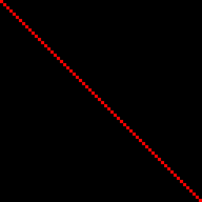
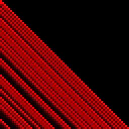
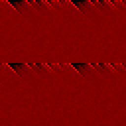

设计良好的非加密Hash函数
http://ticki.github.io/blog/designing-a-good-non-cryptographic-hash-function/
函数设计的关键是，要对每个input block -> output block 映射关系进行打散(diffusions & bijection).diffusions通常可以通过使用小的bijective的组件（函数）进行组合，这些函数称为 sub-diffusions. 常见的下面这些，其中P(x) 表示对X中bits进行重排列。
- d(x) = P(x) ^ m （和固定值进行异或）
- d(x) = P(x) ^ x
- d(x) = (x << m) ^ x
- d(x) = (ax + c) MOD m. 其中gcd(x, m) = 1. 称为linear subdiffusions.
- d(x) = x ^ (x+c) 称为arithmetic subdiffusions.
在设计这些sub-diffusions的时候务必保证有一个函数是zero-senstive. 大致意思就是如果输入是0，那么输出必须是某个特定的值。我其实也没有太理解这个有什么特别的意义。
测量Hash函数冲突率，通常使用雪崩(avalanche)图进行观察。图的大致意思是，X轴是inputs bits, Y轴是output bits. 如果input中某个bits的发生改变的话，那么output上会有那些bits发生变化。将这些变化数量统计出来做成热力图，就可以大致判断这个Hash函数的冲突比例。
- 以f(x) = x为例，可以看到是一条直线，说明雪崩效应不行。
- 如果 f(x) = x * (prime number) ， 可以看到只有一半在发生改变，这是因为mul只会影响output high bits.
- 一个设计良好的hash函数会是下面这样的效果
- 如果在某个函数的基础上去掉ROLk(x)(将x中的bits进行左rotate)，那么可以看到效果好像有点不好了，有些区域还是呈现黑色的。
 
 
设计好了冲突率比较低的函数之后，接下来就是要提高这个hash函数的执行效率了，可以上SIMD或者是调整指令顺序来提高流水。这里有个项目可以来测试hash函数 https://github.com/aappleby/smhasher. 包括执行速度和冲突率。